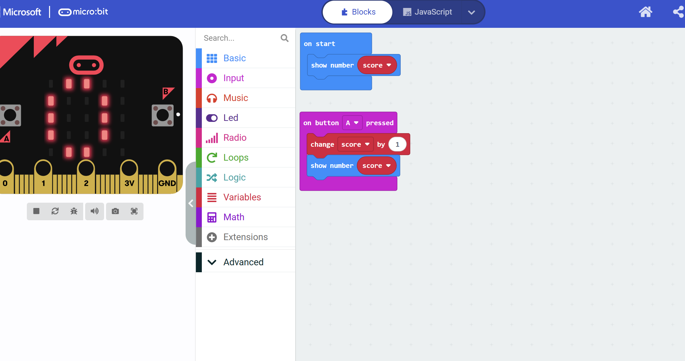
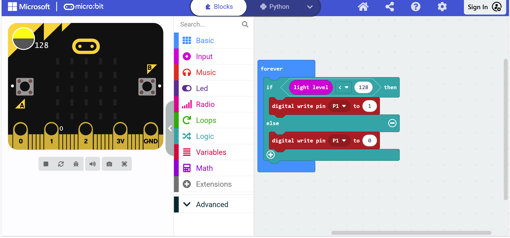
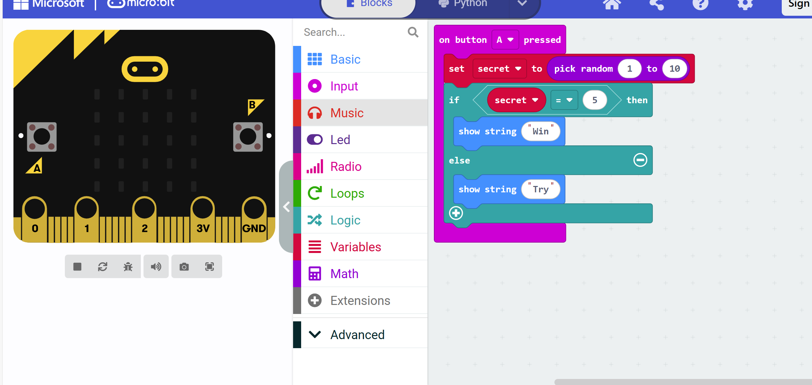

Task 1
What was the issue?
The following project aims to display the value of the variable score and increase it by one every time the user presses button A. However,When the A button is pressed, the score can only be displayed once and is no longer displayed.We need to solve it.
How did you solve it?
I added a "Display the number score" module below the "Change score by 1" module in the content of the "When button A is pressed" module, and the problem was solved.
Share a screenshot of the solution:
Task 2
What was the issue?
In this project, we aim to turn pin one on when the place is dark. The flashlight turns on when it's dark but never turns off again when the room brightens.We need to solve it.
How did you solve it?
Change the "if" module to an "if-else" module, and then add a set of "digital write pin P1 to 0" modules in the "else" part.
Share a screenshot of the solution:
Task 3
What was the issue?
In this project, we develop a guessing number game. Every time the player presses A, a random number between 1 and 10 is picked. If that number is equal to 5, it’s a win! However, it seems quite hard to win… We need to fix it
How did you solve it?
Copy the "set secret to pick random 1 to 10" module from the "On start" module and paste it into the "on button A pressed" module, placing it above the "if-else" module. Finally, delete the "On start" module.
Share a screenshot of the solution:
